Home
Like Earth but on Mars: Small game project
The first game created in our very own Direct X 11 game engine. Link to game play video.
Like Earth but on Mars: What is there to know?
Yeah so, obviously we could not come to an agreement on one name. Both just tingled joy in all of us! After a couple of meetings we at least came to an agreement to make a cute game with fun and happy colors, but once the player starts the game the happyness is wiped away and replaced by bitterness by dark lighting and sad soundeffects.
The game is about a traveling austronout that was supposed to deliver supplise but as he gets closer to his detination, Mars, no one responds to his landing request.
 The ship he was on haywires and crashes at the corner of the colonie and an important part of the ship is thrown into the city for the austronout to retrive. He soon notices upon crawling out of his ship that no one is around to help, and the darkness begins to crawl under the poor astronaut's skin. Soon, a tiny flying creature extracting a bright light makes its way to greet our traveler. With the help of this new friend, our traveler can make his way through the darkness, scaring away the creatures of the shadows and solving the puzzles an uninhabited town may present.
In short, as the player, you use the mouse to move around your light friend. The light friend, that we have chosen to call Lux, can make its way through windows and over fences that the player can not. Lux also scares away monsters, making them move away from the light. This can be used to make monsters walk on top of pressure plates, opening doors and gates. The player plays as the astronaut, walking around in an orderly fashion with W,A,S,D. Our traveler is scared of the dark, meaning Lux needs to be a set range of him for him not to be scared and slowly be suffocated by fear. He does not die from the absence of light, but his movement speed starts to slow down, and at last, he can't move until Lux is back at his side. If a monster were to get to the player, he dies instantly. There are no checkpoints, but the level is short enough to be passed in about ten minutes if the player does not get stuck on any of the puzzles for too long. At the end of the level, the player may find the core. The core is the key to fixing the ship and getting away from this planet as fast as possible. Luckily the astronaut has not only gone through years of education to travel space but also has a degree as a mechanic!
All the stuff
The Map

Sure, not the most ascetically pleasing level of concept art ever made in the history of the earth, but it does what it should! This piece of messy lines in different colors gave the team a uniform mental image of the size of things as well as where to place things like pressure plates, doors, the puzzle areas, floor levels and monsters among other fun stuff. Some of the mechanics in this drawing had to be scrapped or replaced with methods already developed earlier in the process as time ran out. The player makes their way through the level with start at the big zero at the lower left by the little spaceship!
As the level was built on a grid to make pathfinding using A-Star easier to implement I came up with the idea of creating a small texture of 256 x 256 pixels that would represent each node in the A-Star system. The image tells the nodes at what heights the node should be spawned. The black represents the node not being spawned at all. Doing it this way helped me create the path on which the players and monsters travel on with exact accuracy (every pixel represents one unit in length both in Maya and our game engine) and helping us skip all kinds of collision detection as players and monsters may only walk on the path! The colored dots represent where to spawn monsters, lights, pressure plates and lights. This method was later used again in the big game project to create nodes.
The map is seen from a locked camera angle and in an orthographic fashion. Our original thought was to create a method of making objects disappear in the way of the character and the camera, but once again, we did not have time for this so I decided on "cutting holes" in the geometry of the buildings, making way for the camera to see the character where he would be fully covered otherwise. I was a bit too lazy to find the exact camera angle in which the cuts line perfectly for these shots (i have it written down somewhere), but i'm sure you get the idea. This level came to a total triangle count of 113 453 triangles.

- Maya viewport 2.0 render.
Shadow mapping was a no go as we did not have time and the original idea of shading was for us to use toon shading. In the end, we did not manage to create a working toon shader so I decided on doing the toon shading directly in the texture instead.
The characters
We thought it would be fun to use sprites as characters instead of 3D characters for this project. For some reason mirroring sprites in our game engine proved to mess a lot of things up, that's why I made mirrored ones as well in the sprite sheets. Each sprite is 512 x 512 pixels. This proved to be a bit messy with the body of the monster being much smaller then the astronauts as the arms stretch and take up most of the sprite area but as programmers, we do as programmers do and throw some code at it instead! (We just scaled it up)